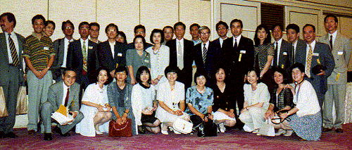
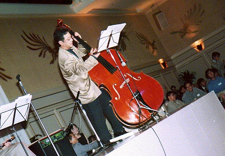
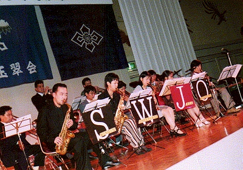
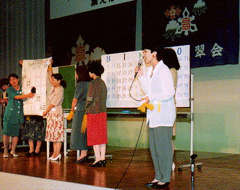
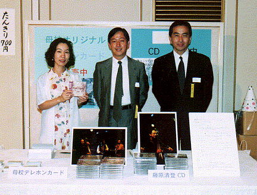
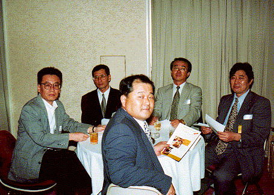
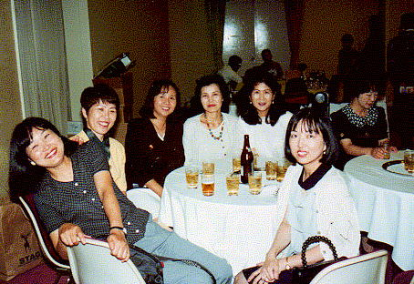

|
47年卒は高松参加組を含め80人が出席し、大成功！ 第１４回東京玉翠会総会は、１９９６年（Ｈ８）７月１３日に東京プリンスホテルで開催されました。今年の総会は、４７年卒が担当幹事となり、昨年（Ｈ７）から準備を進めてきました。 ３月からは、ほぼ毎週のように集まって打ち合わせを行い、終わると飲み会に移行するということを繰り返しました。 その成果があって、当日は８００人を超える出席をいただき、動員目標（担当 神田）を達成しました。とくに、４７年卒は高松からもはせ参じてくれて、総勢８０人が出席しました。 以下、当日の様子です。
藤原さんがジャズ風にアレンジした高高校歌(1分) 全員で「高々高々」の合唱(40秒)  松橋校長、西本先生、溝川先生を囲んで。 ここに写っているのは４７年卒の一部です。 このあと、一部の人たちは明け方まで飲みました。   藤原くんのジャズの演奏 高松からもジャズバンドが応援に駆けつけました。   ビンゴゲーム このときの景品は、デジタルカメラなど豪華なものでした。  総幹事の堀本くんのあいさつ   総会終了後、控え室でほっと一息 高松高校東京玉翠会トップページ |